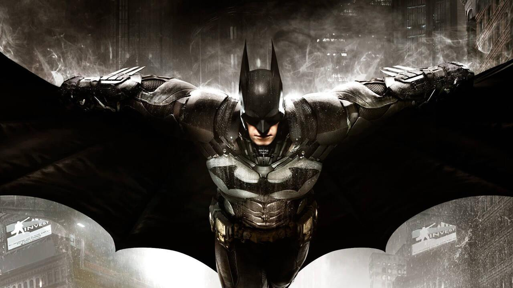
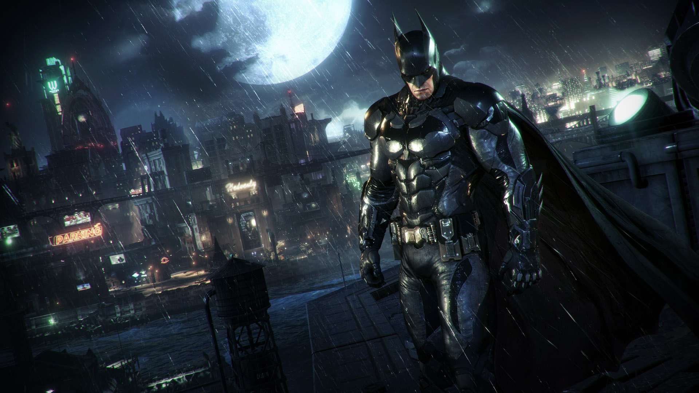

Quem é o Batman?
O Batman é um super-herói criado pela DC Comics, que apareceu pela primeira vez em 1939. Sua identidade secreta é Bruce Wayne, um bilionário que, quando criança, presenciou o assassinato de seus pais na cidade de Gotham. Esse trauma marcou profundamente sua vida e o motivou a dedicar sua existência ao combate ao crime.
Diferente de muitos heróis, Batman não possui superpoderes. Ele utiliza inteligência, treinamento físico intenso, habilidades de detetive, tecnologia avançada e seus recursos financeiros para enfrentar criminosos. Essa característica o torna mais humano e aproxima suas histórias da realidade social.
Em várias histórias, Gotham representa problemas sociais como desigualdade, corrupção e violência urbana. Alguns quadrinhos usam o Batman como forma de crítica social, mostrando como falhas nas instituições, interesses econômicos e autoritarismo afetam principalmente quem tem menos direitos e oportunidades.
Além disso, muitas narrativas questionam se a atuação de Batman como vigilante é realmente uma solução ou apenas um reflexo de um sistema falho. Assim, o personagem também levanta debates sobre justiça, moralidade e os limites do poder individual.
Galeria

